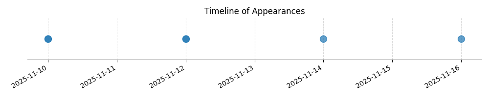

Kategorie: Letecké předpisy
Správná odpověď A je správná, protože tato otázka se týká pravidla pro minimální výšku letu VFR (Visual Flight Rules) podle Leteckého zákona. Obecně platí, že při letu VFR nad obydlenými oblastmi nebo shromážděními lidí na otevřeném prostranství se musí dodržet výška 150 m (500 stop) nad nejvyšší překážkou v okruhu 150 m (500 stop) od letadla. Toto pravidlo se neuplatňuje při vzletu nebo přistání nebo pokud je vydáno zvláštní povolení úřadu.

| Datum výskytu |
|---|
| 2025-11-16 |
| 2025-11-14 |
| 2025-11-12 |
| 2025-11-10 |